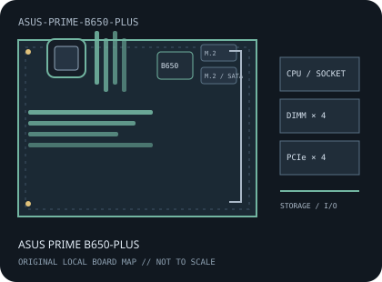

[ INDIVIDUAL COMPONENT // MOTHERBOARDS ]
ASUS PRIME B650-PLUS
AMD Socket AM5 / AMD B650, ATX, 305 × 244 mm, 2022. This record identifies the exact model and revision scope below.

REVISION WARNING: Verify the full model name and PCB revision silkscreen before fitting a CPU, selecting memory, or applying firmware. Similar names and revisions may use different support files.
Specifications
| Catalog subcategory | AMD Socket platforms |
|---|---|
| Board / revision covered | PRIME B650-PLUS retail model; distinguish it from PRIME B650M-A and other B650 variants, and verify PCB identity on the board. |
| Socket and chipset | AMD Socket AM5 / AMD B650 |
| Form factor | ATX, 305 × 244 mm |
| Memory | Four dual-channel DDR5 DIMM sockets, up to 192 GB in ASUS's current specification; EXPO speeds and population limits depend on CPU, BIOS and memory QVL. |
| CPU and BIOS support | Ryzen 7000, 8000 and 9000 Series desktop CPUs listed for this model; AM5 generation support and minimum BIOS vary by exact CPU. Check ASUS CPU support before fitting a processor. |
| Expansion | One CPU-connected PCIe 4.0 x16 slot (lane width depends on CPU generation), one chipset PCIe 4.0 x16-length slot operating at x4, and two chipset PCIe 4.0 x1 slots. |
| Storage | Two M.2 sockets: CPU-connected M.2_1 supports PCIe 5.0 x4 with Ryzen 7000/9000 and PCIe 4.0 x4 with Ryzen 8000; M.2_2 is PCIe 4.0 with CPU-dependent lane width. Four SATA 6 Gb/s ports. |
| Rear I/O and connectivity | Four USB 3.2 Gen 2 (three Type-A, one Type-C), two USB 3.2 Gen 1 Type-A, two USB 2.0 Type-A, DisplayPort 1.4 and HDMI 2.1 for supported CPU graphics, Realtek 2.5GbE, five analog audio jacks, optical S/PDIF and BIOS FlashBack. |
Compatibility and revision notes
AM5 accepts DDR5 only and is not compatible with AM4 processors or DDR4. Newer CPU support can require a BIOS update; confirm the exact CPU, BIOS and memory QVL.
Socket, connector shape and chipset branding alone do not establish compatibility. Check the exact board revision, CPU support table, minimum BIOS, memory population rules, power connectors, case clearance and lane-sharing details in the cited documents.
Preservation and repair
Protect the AM5 socket's exposed contact field, inspect DIMM and M.2 retention, and use the manual's documented BIOS recovery/update procedure for this exact model.
For archival preservation, record PCB revision, serial/date codes, installed firmware, known faults, repairs and test conditions. Use ESD-safe handling and do not power a board with loose conductive hardware beneath it.
Manufacturer sources
- ASUS PRIME B650-PLUS technical specificationsCurrent ASUS specification for DDR5 capacity, expansion, storage and I/O.
- ASUS PRIME B650-PLUS user manual and downloadsManufacturer manual for layout, installation, M.2 and BIOS procedures.
- ASUS PRIME B650-PLUS CPU supportCheck exact processor support and minimum firmware.
Manufacturer specifications, manuals and support lists are authoritative for the physical board; use only revision-matched firmware.